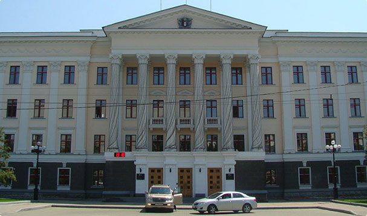

Гражданское общество Хабаровска

Заседание Общественного совета Хабаровска
Большой интерес вызвал и второй вопрос – проблема содержания и ремонта ветхого фонда в городе. Выслушав информацию, представленную управлением ЖКХ и управлением жилищного фонда и приватизации жилья, члены совета решили подготовить и направить обращение депутатам Законодательной думы Хабаровского края. В нем они намерены заострить внимание на проблемах содержания и ремонта домов с большим процентом износа, а также на необходимости разработки соответствующих федеральной и краевой программ.
В повестке дня был также вопрос «Осуществление общественного контроля в Хабаровске: механизмы реализации, создание инспекций при Общественном совете». Здесь предстоит большая работа – необходимо разработать и принять постановление администрации города «Об общественном контроле в городе Хабаровске»; создать инспекции по общественному контролю при Общественном совете города; разработать план работы на IV квартал 2016 г
Участники заседания Совета обсудили и утвердили пилотную стратегию дальнейшего развития общественного контроля в городе. Определены два направления, где возможно, в первую очередь, организовать общественный контроль – это жилищно-коммунальное хозяйство и здравоохранение.
Заседание Общественного совета Хабаровска
Большой интерес вызвал и второй вопрос – проблема содержания и ремонта ветхого фонда в городе. Выслушав информацию, представленную управлением ЖКХ и управлением жилищного фонда и приватизации жилья, члены совета решили подготовить и направить обращение депутатам Законодательной думы Хабаровского края. В нем они намерены заострить внимание на проблемах содержания и ремонта домов с большим процентом износа, а также на необходимости разработки соответствующих федеральной и краевой программ.
В повестке дня был также вопрос «Осуществление общественного контроля в Хабаровске: механизмы реализации, создание инспекций при Общественном совете». Здесь предстоит большая работа – необходимо разработать и принять постановление администрации города «Об общественном контроле в городе Хабаровске»; создать инспекции по общественному контролю при Общественном совете города; разработать план работы на IV квартал 2016 г.
Участники заседания Совета обсудили и утвердили пилотную стратегию дальнейшего развития общественного контроля в городе. Определены два направления, где возможно, в первую очередь, организовать общественный контроль – это жилищно-коммунальное хозяйство и здравоохранение.
Возврат к списку статей